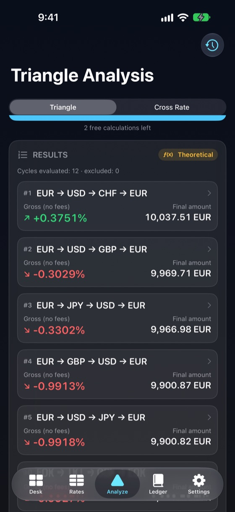
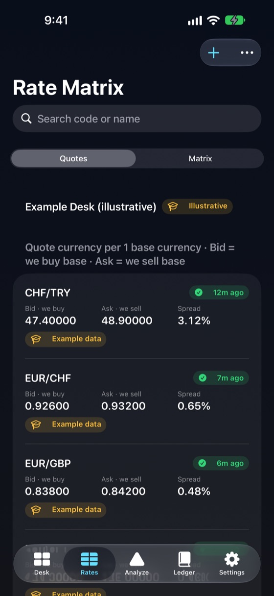
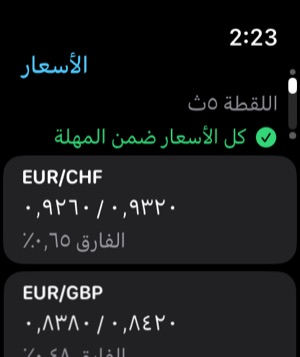

يعمل دون إنترنت
جداول الأسعار والسجل والحسابات محفوظة على الجهاز. يفتح FXDesk ويحسب في وضع الطيران.
لمكاتب الصرافة والصرّافين ومتداولي العملات
يحوّل FXDesk أسعار الشراء والبيع على لوحتك إلى مصفوفة أسعار وأسعار متقاطعة ومسارات تحويل A → B → C → A مرتّبة — مع إظهار كل فارق ورسوم وطابع زمني.
يعمل بالكامل على iPhone ودون إنترنت، ولا يعرض أي نتيجة نظرية على أنها ربح مضمون.

كل رقم يوضّح مصدره وعمره وجانب السعر المستخدم.
جداول الأسعار والسجل والحسابات محفوظة على الجهاز. يفتح FXDesk ويحسب في وضع الطيران.
يقيّم كل دورة A → B → C → A في جدولك وفي الاتجاهين، ويرتّبها حسب الصافي التقديري.
لقطة للقراءة فقط من مكتبك وعمر الأسعار وآخر نتيجة على Apple Watch.
وضع الأرقام الكبيرة وأرقام متساوية العرض وبحث سريع عن العملات.
أدخل سعري الشراء والبيع لكل زوج. تُظهر المصفوفة كل اتجاه، و«—» حيث لا يوجد سعر.
بيع العملة الأساسية بسعر الشراء وشراؤها بـ 1 ÷ سعر البيع. الأسعار المعكوسة تبدّل الجانبين بشكل صحيح، ولا ضرب للأسعار الوسطية لصنع ربح وهمي.
قارن السعر المباشر بالسعر التركيبي عبر عملة ثالثة مع الفارقين واكتشاف السوق المتقاطعة.
أضف عمولة لكل خطوة ورسمًا ثابتًا. يظهر الإجمالي والصافي التقديري جنبًا إلى جنب، خطوة بخطوة.
جدول أسعار لكل مكتب أو فرع. تكرار وإعادة تسمية وتصدير واستيراد — دون خلط الأسعار أبدًا.
يُحفظ كل حساب مع الأسعار الدقيقة والطوابع الزمنية والتقريب والرسوم المستخدمة.
لا حساب ولا تحليلات ولا تتبّع. تبقى أسعارك على جهازك ما لم تصدّرها.
ثلاث حسابات مجانية، ثم شراء واحد داخل التطبيق. دون اشتراك.
سجّل المشتريات والمبيعات واطّلع على صافي النقد اليومي ومركز كل عملة وهامش تقديري. تصدير CSV.
حوّل iPad أو iPhone إلى لوحة «نشتري / نبيع» بملء الشاشة لعملائك.
اكتب أسعار الشراء والبيع من لوحتك، أو ابدأ بالمكتب التوضيحي.
اختر عملة البداية والمبلغ، أو دورة محددة من ثلاث عملات.
يطبّق FXDesk جانب السعر الصحيح على كل خطوة ويرتّب الدورات الممكنة.
تحقّق من الفوارق والرسوم والتقريب النقدي وحداثة الأسعار وافتراضات كل نتيجة.
السعر الاسترشادي أو المرجعي ليس سعرًا قابلًا للتنفيذ. يحسب FXDesk بالأسعار التي تدخلها، ولا يمكنه معرفة ما إذا كان المكتب سيلتزم بها أو يملك الأوراق النقدية أو يفرض حدودًا.
الفوارق والعمولات والتقريب إلى فئات الأوراق النقدية والوقت بين الخطوات تلغي عادةً الفروق النظرية الصغيرة. لذلك يفصل FXDesk بين الإجمالي والصافي التقديري ويصف الأسعار القديمة أو الوسطية فقط أو التوضيحية بأنها نظرية.
FXDesk آلة حاسبة. لا ينفّذ صفقات أو عمليات صرف، ولا يقدّم استشارات مالية، ولا يضمن أي ربح.
كل الأسعار والملفات والسجل والحسابات محفوظة على iPhone وتعمل دون اتصال. يحتفظ كل سعر بوقت تسجيله ومصدره، وتُميَّز الأسعار الأقدم من الحد الذي تحدده — ولا تُعامل أبدًا على أنها حالية.


يعرض تطبيق الساعة لقطة للقراءة فقط من المكتب النشط: الأسعار والفوارق وعمر اللقطة وعدد الأسعار القديمة وآخر حساب. ويحتفظ بآخر لقطة عندما يكون iPhone بعيدًا.
مجانًا
$29.99
شراء واحد داخل التطبيق (السعر الأمريكي؛ يحدد App Store الأسعار المحلية).
نتيجة ثلاثية أو متقاطعة ناجحة. لا تُحتسب المدخلات غير الصالحة أو الأخطاء أو تصفّح الأسعار أو تعديلها أو إعادة فتح السجل، ولا يُحتسب الحساب المطابق مرتين.
نعم. الأسعار والملفات والسجل والحسابات كلها على iPhone. فقط أسعار البنك المركزي الأوروبي الاختيارية والشراء من App Store تحتاج اتصالًا.
لا. يحسب FXDesk بالأسعار التي تدخلها. أسعار البنك المركزي الأوروبي الاختيارية تُنشر مرة كل يوم عمل للمعلومات فقط ولا تُستخدم في الحسابات.
تحويل A → B → C → A عبر ثلاثة أسعار. إذا كان المبلغ النهائي بعد الفوارق أكبر من مبلغ البداية، تُظهر الدورة فرقًا نظريًا.
لا. النتيجة بجودة الأسعار فقط. التوفّر ومخزون الأوراق والحدود والرسوم والتوقيت قد تلغيها. يصف FXDesk النتائج بأنها استرشادية أو نظرية، وليست قابلة للتنفيذ أبدًا.
عند البيع تحصل على سعر الشراء الأقل، وعند الشراء تدفع سعر البيع الأعلى. كل خطوة تدفع الفارق، لذا تنتهي معظم الدورات تحت مبلغ البداية بقليل.
ثلاث حسابات مكتملة. لا تُحتسب الأخطاء أو المدخلات غير الصالحة.
لا. إنه شراء لمرة واحدة غير قابل للاستهلاك ويمكن استعادته.
لقطة للقراءة فقط: الأسعار والفوارق وعمر اللقطة وعدد الأسعار القديمة وآخر حساب.
لا. لا يتداول ولا يصرف أموالًا ولا يتصل بأي بنك أو وسيط.
ملفات مكاتبك وأسعارك والسجل والإعدادات وعدّاد الحسابات المجانية. لا يُرفع شيء ولا يوجد حساب.